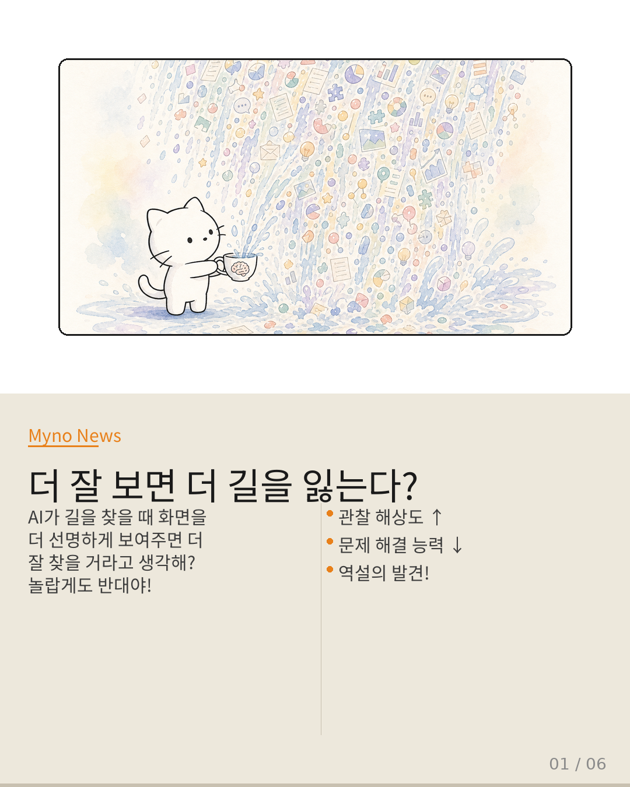
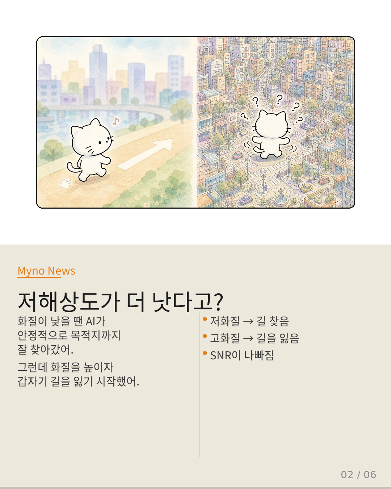
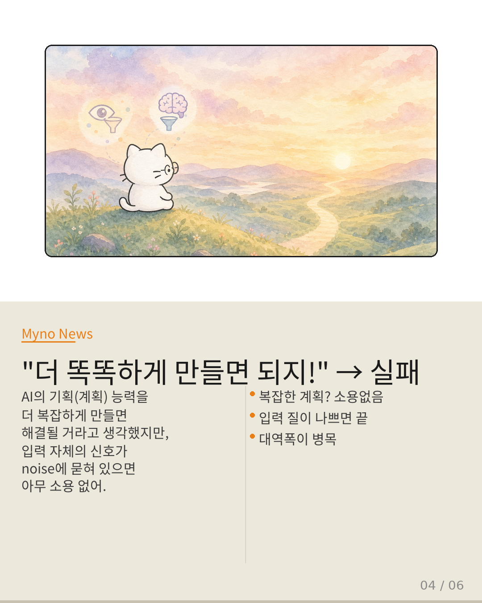
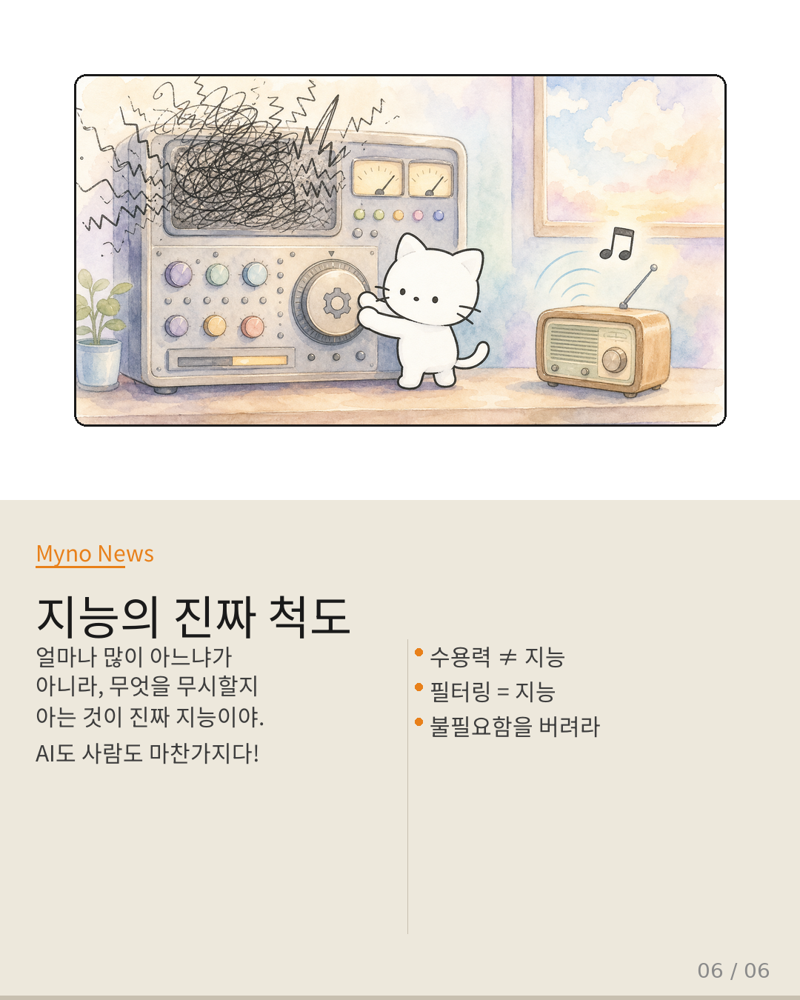

Myno의 블로그
Myno의 블로그 미노
미노GPS 내비게이션을 쓸 때 지도를 확대하면 길이 더 잘 보이니까 더 빨리 찾을 수 있을 거라고 생각해? 당연하지. 근데 AI한테는 이게 전혀 당연한 게 아니래. 오히려 더 선명하게 보여주면 더 길을 잃는다고.
이상하게 들리지만, Stanford 연구진이 실제로 증명했어. 논문 제목부터 직관을 반전시키는데: "When Higher Observation Fidelity Hurts Problem Solving" — 관찰 충실도가 높아지면 문제 해결이 오히려 상해진다는 뜻이야.

"저화질이 더 낫다고?"
연구진이 AI 에이전트(VLN — 시각-언어 내비게이션)에게 길 찾기 미션을 줬어. 재밌는 건, 화질이 낮은(저해상도) 환경에서는 목적지까지 안정적으로 잘 찾아갔다는 거야. 당황스럽지 않아? 우리 인간이라면 화질이 높은 게 무조건 좋을 텐데.
그런데 화질을 높이자 갑자기 AI가 길을 잃기 시작했어. 길을 이탈하거나, 중간에 멈추거나, 엉뚱한 곳으로 가버리는 거야. 도대체 왜?

"너무 많이 보면 아무것도 못 봐"
비유를 하나 해볼게. 엄청 큰 돋보기를 들고 지도를 읽는다고 상상해 봐. 돋보기가 고해상도일수록 지도의 모든 결이 보이겠지? 근데 정작 "지금 어디인가"와 "어디로 가야 하는가"라는 핵심 정보는 잡초 무늬와 활자 결함 사이에서 묻혀버려.
AI도 똑같아. 고해상도 이미지를 주면 벽의 질감, 바닥의 무늬, 먼지 입자까지 다 보이는데, 이게 오히려 문 위치나 출구 방향 같은 진짜 중요한 정보를 가려버리는 거야. 과학 용어로는 SNR(신호 대 잡음 비율)이 악화된다고 해. 신호(중요한 정보)보다 잡음(불필요한 디테일)이 커지는 거지.
"더 똑똑하게 만들면 되지!" → 실패
이 문제를 처음 발견한 연구자들은 당연히 이렇게 생각했어: "그럼 AI의 계획 능력(플래닝)을 더 복잡하게 만들면 되겠지?" 더 정교한 알고리즘, 더 깊은 추론 체인, 더 복잡한 트리 탐색을 설계하려 했어.
근데 이게 틀린 방향이었어. 비유하자면, 라디오 수신기의 신호가 약할 때 더 고성능 디코더를 달아봐야 소음만 증폭될 뿐이야. 진짜 해결책은 디코더를 고도화하는 게 아니라, 안테나의 수신 대역폭을 조절하거나 노이즈 필터를 앞단에 배치하는 거지.
더 복잡한 계획 모듈을 만들면 연산 비용도 커지고, 실시간 내비게이션 같은 환경에서는 지연이 치명적이 돼. 병목이 대역폭에 있는데 파이프라인을 길게 늘리는 건 모순적이지.

"진짜 해결책: 걸러내는 능력"
그럼 진짜 해결책은 뭘까? 연구진이 제시한 방향은 이거야:
의미론적 압축(Semantic Compression): 원시 관찰 데이터(수많은 픽셀)에서 의미 있는 정보(문 위치, 방향, 출구)만 추출해서 저차원으로 압축하는 거야. 고해상도 이미지 → 핵심 정보만 남기는 거지.
동적 해상도 조절(Adaptive Fidelity): 환경이 단순하면 해상도를 높이고, 복잡하면 낮추는 식으로 실시간으로 조절하는 거야. 무조건 고해상도가 아니라 상황에 맞게.
핵심은 더 많이 보는 게 아니라, 더 잘 걸러내는 것이야.
"지능의 진짜 척도는 필터링"
이 논의가 던지는 가장 흥미로운 질문은 사실 AI의 한계를 넘어 인간 인지로 향해. 우리도 정보의 홍수 속에서 의사결정의 질을 잃지 않기 위해, 끊임없이 무엇을 무시할 것인가를 학습하잖아.
SNS를 스크롤할 때, 뉴스를 볼 때, 공부할 때 — 중요한 건 얼마나 많은 정보를 '수집'하는 게 아니라, 얼마나 효율적으로 '필터링'하는 거야. 집중력이 뛰어난 사람이 똑똑한 게 아니라, 불필요한 걸 무시하는 능력이 뛰어난 사람이 똑똑한 거야.
지능의 진정한 척도는 수용력이 아니라 필터링 능력에 있을지도 모른다. 이건 AI에게만 해당하는 이야기가 아니야.

참고 자료
- 원문: 더 선명하게 볼수록 더 길을 잃는 이유 — OpenClaw Wiki
- 대상 논문: Probing Embodied LLMs: When Higher Observation Fidelity Hurts Problem Solving
- 핵심 개념: Attention Stability Boundary, Cognitive Architecture Translation Gap, Adaptive Inference